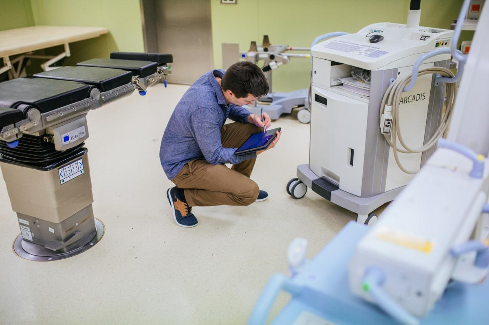

Medical Equipment Condemnation Support
Before You Condemn It, Let HMS Inspect It.
HMS provides technical assessment and documentation support to help hospitals consider whether equipment may be repairable, refurbishable, due for replacement or at the end of its useful life.
HMS documents technical findings to support an informed decision by the hospital's authorized committee or applicable authority.
Talk to HMS →
Inspect Before You Decide
Technical Assessment
Assess equipment condition, faults and serviceability before a final decision.
Repair Feasibility
Identify whether practical repair may still be possible based on technical condition.
Technical Documentation
Document technical findings and supporting equipment information for review.
Better Replacement Decisions
Support informed consideration of repair, refurbishment or replacement.
Technical Assessment Before Final Decision
Condition, Faults & Serviceability
Assess the equipment's condition, identified faults and current serviceability.
Repair Feasibility
Consider whether practical repair is technically feasible.
Refurbishment Feasibility
Assess whether refurbishment may be a practical alternative.
Age & Service History
Review equipment age and available service history as part of the technical assessment.
Parts Availability & Maintainability
Consider parts availability and maintainability of the equipment.
Supporting Technical Documentation
Provide supporting technical findings and documentation for authorized review.
Inspect
Inspect the equipment and identify its current condition.
Assess
Assess faults, serviceability, age and service history.
Repair?
Consider whether practical repair is possible.
Refurbish?
Consider whether refurbishment provides a practical option.
Replace?
Provide technical findings to support the authorized decision.
Final Condemnation Decision
HMS provides technical assessment and documentation support. The formal condemnation decision remains with the hospital authorized committee or applicable authority.
Talk to HMS before valuable equipment is written off.
Let HMS assess the equipment's condition, repair or refurbishment feasibility and supporting technical information before an authorized decision is made.
Talk to HMS →